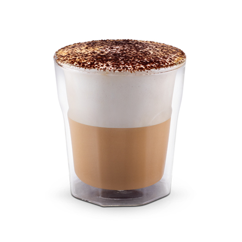

Cappuccino

Description
How to make cappuccino at home! This popular espresso drink is creamy with just the right touch of foamed milk.
Ingredients
Steps
- Make the espresso using an espresso machine, espresso maker, or Aeropress
- Steam the milk and get it nice and foamy.
- Pour the frothed milk into the espresso and serve! Its nice to use a latte cup, which holds the perfect amount.